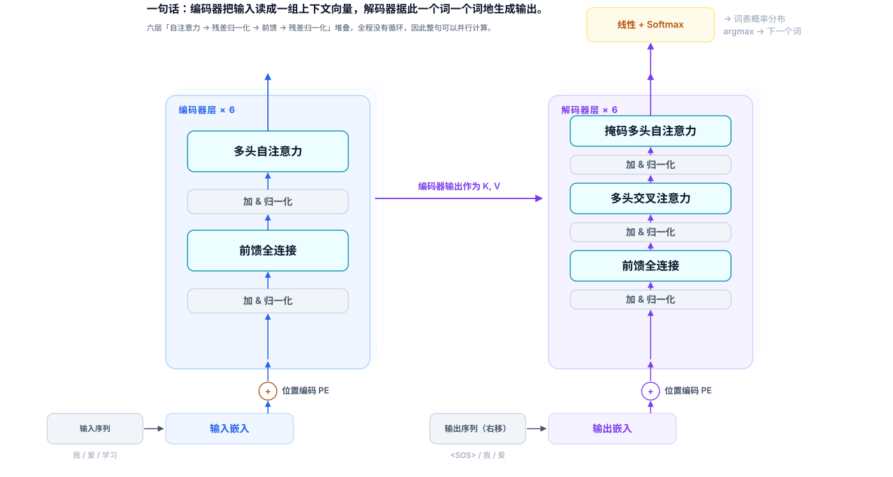
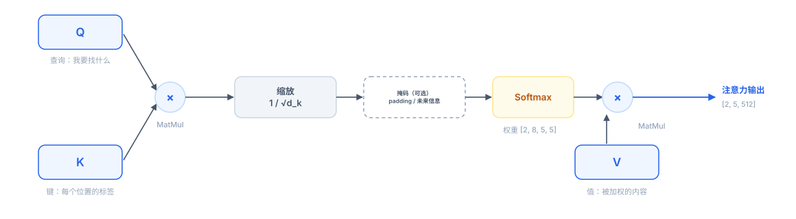
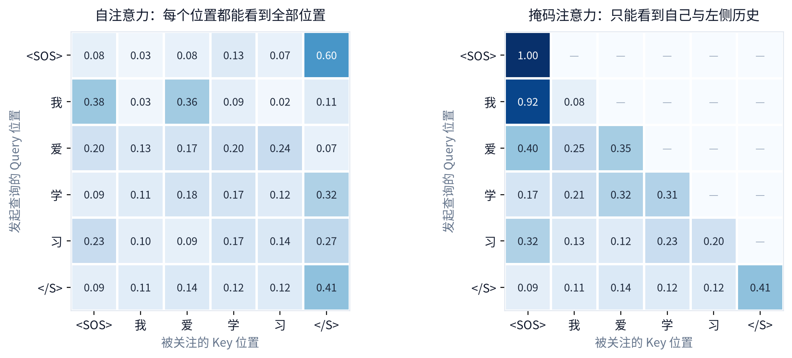
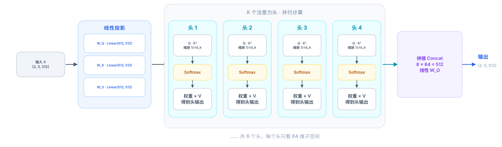
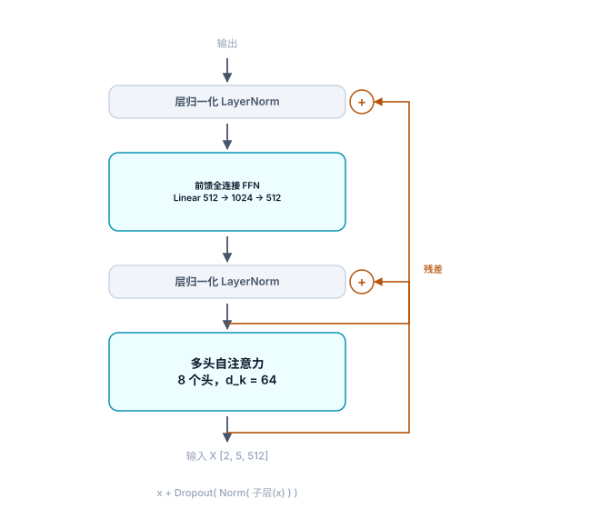

为什么要有 Transformer
在它出现之前，处理序列的主流方案是 RNN：一个词一个词地读，把历史压进一个隐藏状态。 这带来了两个绕不开的麻烦——算得慢，以及记不住。
RNN 的第 t 步必须等第 t−1 步算完，训练时无法并行；而且第一个词的信息要穿过 十几个隐藏状态才能影响最后一个词，距离一远就衰减得厉害。Transformer 的做法很干脆： 把「顺序」这件事交给位置编码，把「关联」这件事交给注意力。 任意两个位置之间只有一步计算，既并行，也不丢距离。

- 并行：整句话被展成一个矩阵
[batch, seq_len, d_model]，一次前向就能算完全部位置。 - 短路径：任意两词的距离恒为 1，长依赖不再需要「接力」。
- 可观察：注意力权重本身就是一张可解释的热力图，能看出模型在关注谁。
页面里的代码不涉及预训练、大规模语料和分布式训练，也不追求翻译效果。目标只有一个： 把结构本身写清楚——每个模块都能单独实例化、跑一次前向、打印出张量形状。
整体架构：四条流水线，六层堆叠
整个模型可以拆成四块：输入部分、编码器、解码器、输出部分。下面的图就是这四块的位置关系， 后面每一节都会对应到其中一个方块。

| 部分 | 包含什么 | 对应文件 | 作用 |
|---|---|---|---|
| 输入部分 | 词嵌入 + 位置编码 | dm01_input.py | 把词索引变成带位置信息的稠密向量 |
| 编码器 | 自注意力 + 前馈 + 残差归一化，× N | dm02 / dm03 / dm04 | 读入整句，输出每个位置的上下文表示 |
| 解码器 | 掩码自注意力 + 交叉注意力 + 前馈，× N | dm03 / dm05 | 按已生成的历史，逐词预测下一个词 |
| 输出部分 | 线性层 + Softmax | dm05（Generator） | 把向量映射到词表上的概率分布 |
输入部分：词嵌入与位置编码
dm01_input.py 做了两件事：把词索引查表成 512 维向量，
再给每个向量加上一个「位置指纹」。少了后者，模型看「我爱学习」和「学习爱我」是完全一样的。
3.1 词嵌入：查表 + 缩放
nn.Embedding 本质上是一张 vocab_size × d_model 的可训练查找表。
前向时它把输入的整数索引换成对应的行向量，再乘上 √d_model。
这一步缩放不是装饰：位置编码的数值范围在 ±1 之间，若词向量量级太小，两者相加时位置信号会把语义淹没。
用一个 2×5 的假句子验证一下，打印出来的形状正是 torch.Size([2, 5, 512])：
3.2 位置编码：用正弦波给每个位置盖章
Transformer 没有循环结构，也就没有天然的「第几个词」的概念。论文给出的办法是用一组不同频率的正余弦函数， 为每个位置生成一个唯一的 512 维向量，再与词向量逐元素相加。
把 120 个位置 × 512 维的编码矩阵画出来，就是下面的波浪：左侧高频震荡、右侧近乎平缓， 每一行（每个位置）都是一组独一无二的条纹组合。这种设计还有个额外好处—— 任意两个位置的相对距离可以用线性变换表达，模型因此更容易学到「隔几个词」的概念。

对应代码只有十几行，关键在于把「1 / 100002i/d」改写成指数形式，避免逐元素求幂：
一是 max_len 的默认值是 50，但注释里写着 5000——句子超过 50 个词就会在
self.pe[:, :x.size(1), :] 处切片越界，得先改这个参数。
二是 pe 用 register_buffer 注册而不是存成普通属性，
这样它跟着模型一起搬到 GPU，但不会被当成参数更新。
exp(arange(0, d, 2) * (-log(10000)/d) 就是 10000^(-2i/d)，
取负号是因为公式里它是分母。写成 exp/log 的形式，既能避免 10000 ** (2i/d) 溢出，
也比逐项除法更快。
注意力机制：一句话里，谁该看谁
注意力的核心是一次「软查询」：每个位置拿出一个 Query，去和所有位置的 Key 比对相似度， 再用相似度加权求和对应的 Value。就这么三步，没有任何循环。

为什么要除以 √d_k？因为两个 64 维随机向量的点积方差约为 64，
不做缩放的话数值会大到让 softmax 退化成「赢者通吃」的硬选择，梯度几乎为零。
除以维度平方根，正好把方差拉回 1 附近。
代码里唯一的分支是掩码：凡是 mask == 0 的位置都被填成 -1e9，
经过 softmax 后这些位置的权重约等于 0，等于「物理屏蔽」。掩码在解码器里尤其关键——
生成第 3 个词时绝不能看到第 4、5 个词。

mask.unsqueeze(0) 把 [head, seq, seq] 升成
[1, head, seq, seq]，是为了和 [batch, head, seq, seq]
的注意力分数做广播——batch 维上的 1 会自动复制到每个样本。
多头注意力：把 512 维切成 8 份并行看
一组 Q/K/V 只能学到一种「关注方式」。多头把 512 维拆成 8 个 64 维的子空间， 让 8 个头各自去学不同的关系（指代、句法、邻近……），最后拼回来再投影一次。

代码里最值得盯住的是那三行 view 与 transpose：
形状从 [2, 5, 512] 变成 [2, 5, 8, 64]，
再转置成 [2, 8, 5, 64]——把「头」提到 batch 后面，
这样 8 个头就变成了 8 个独立的样本，后续的 attention() 一行都不用改。
这里的 clones 用 copy.deepcopy 复制了 4 个
nn.Linear——Q、K、V 各一个，加上输出投影一个。必须是深拷贝：
若直接写 [nn.Linear(...)] * 4，四个位置会共享同一份参数，模型就退化成单头了。
8 个头、每头 64 维，总维度和单头 512 维完全相同。多头不是「算 8 遍」，而是把同一份预算切成 8 份并行使用， 参数量基本不变，表达却更丰富。
前馈网络：逐个位置做一次「深加工」
注意力负责在位置之间搬运信息，前馈网络负责在每个位置上独立地做非线性变换。 两层线性 + 一个 ReLU，中间维度放大 2~4 倍。
注意它是对最后一维做变换：输入 [2, 5, 512]，
中间变成 [2, 5, 1024]，输出回到 [2, 5, 512]。
nn.Linear 只作用于最后一维，前两个维度（batch 与句长）原封不动，
所以 5 个位置之间互不干扰——这也是它和注意力最本质的分工。
先升维再降维，相当于在一个更高维的空间里做非线性筛选，然后再压缩回原来的通道数。 如果只用一个线性层，整个 FFN 就退化成矩阵乘法，叠多少层都等价于一层。
层归一化与残差：让六层能叠起来
单独一个子层好写，难的是把六个这样的子层串起来还不崩。残差连接保住原始信息， 层归一化把数值拉回稳定区间——这两样是整个堆叠能训练的前提。
这里最容易和 BatchNorm 搞混。区别在于「沿哪个方向统计」：BatchNorm 对同一个特征、跨样本求均值； LayerNorm 对同一个样本、跨特征求均值。序列任务里句长参差不齐，跨样本统计会被 padding 带偏， 所以 Transformer 一律用 LayerNorm。
| 对比项 | BatchNorm | LayerNorm |
|---|---|---|
| 统计方向 | 同一特征、不同样本 | 同一样本、不同特征 |
| 常见场景 | 图像（CNN） | 序列（RNN / Transformer） |
| 对 batch 大小 | 敏感，小 batch 波动大 | 不敏感 |
| 推理时 | 依赖训练期累计的均值方差 | 逐样本即时计算，训练推理一致 |
残差连接则把子层的输入原样加到输出上。对六层堆叠来说，这等于给梯度开了一条直通车道：
反向传播时即便某一层的梯度很小，也能沿着 + x 这条捷径传回去。
代码把它封装成 SublayerConnection，任何子层都能套进去：
论文原版是 Post-LN：Norm(x + Sublayer(x))，归一化包住整条残差支路。
后来被广泛采用的 Pre-LN 是 x + Sublayer(Norm(x))，归一化挪到子层入口。
而这版代码写的是 x + Dropout(Norm(Sublayer(x)))：归一化作用在子层输出上，
残差支路本身不经过归一化。也就是说，它只符合 Pre-LN 的一半——残差主轴不被归一化，
所以梯度更稳、可以省掉 warmup；但子层的输入仍是未归一化的原始 x。
三种写法都能训练，差别在数值稳定性上，读代码时先认清自己看的是哪一种。
编码器层：两个子层，重复六次
把前面几块拼起来：一个编码器层 = 多头自注意力 + 前馈网络，各自套一层残差与归一化； 再把这一层复制 6 份、最后补一次归一化，就是编码器。

代码结构非常直白：clones(SublayerConnection(...), 2) 造出两个连接器，
分别套在多头上注意力和前馈网络上。lambda 只是把 mask
提前绑定进去，让子层签名统一成「输入→输出」。
编码器本身只是一个循环 + 收尾的归一化。值得注意的是它并不改变形状——
进去 [2, 5, 512]，出来还是 [2, 5, 512]，
变的只是每个向量里「装了什么」。
上面那种「残差支路不归一化」的写法，会让主轴上的数值随层数累积放大，堆到第 6 层时已经偏离原点很远。 出口处再归一化一次，能把表示重新拉回稳定的分布，交给解码器使用。
解码器层：三个子层，两套掩码
解码器比编码器多了一个「交叉注意力」子层。它先用掩码自注意力看自己已经生成了什么， 再去编码器输出里查资料，最后前馈加工，输出下一个词的概率。

三个子层的输入输出各不相同，这是解码器最容易写错的地方：第一个子层是自注意力
(x, x, x)；第二个子层的 Q 用解码器当前的 x，而 K、V 都来自编码器输出
(x, encoder_output, encoder_output)；第三个子层就是普通前馈。
两套掩码各管一件事：target_mask 是「未来掩码」，把当前位置右侧的分数填成
-1e9，防止训练时偷看答案；source_mask 是「padding 掩码」，
把补齐位的分数屏蔽掉，免得模型去关注 <pad>。
最末端的 Generator 把 512 维表示映射成词表上的对数概率：
配合 nn.NLLLoss 使用时，log_softmax 比「先 softmax 再取 log」
数值更稳：它把指数运算和归一化合并成一步，避免概率很小时 log(0) 溢出。
如果改用 CrossEntropyLoss，这里就该输出裸 logits。
组装：一个 forward 串起全部
最后一步是把四块零件装进一个容器。整个 forward 只有五行有效代码，
却把 681 行的零件全部串了起来。
数据在五个环节之间流动时，形状变了一次又一次，但只有最后一步才真正变大：
| 步骤 | 运算 | 输出形状 | 含义 |
|---|---|---|---|
| 1 | source_embded(source_x) | [2, 5, 512] | 词索引 → 向量 + 位置 |
| 2 | encoder(x, source_mask) | [2, 5, 512] | 六层上下文编码 |
| 3 | target_embded(target_y) | [2, 5, 512] | 已生成序列的嵌入 |
| 4 | decoder(y, enc, ...) | [2, 5, 512] | 融合编码器信息的表示 |
| 5 | generator(dec) | [2, 5, 1000] | 每个位置对 1000 个词的对数概率 |
下面这段就是可以直接跑起来的验证代码，用的全是假索引，只为确认形状与连接关系：
上面传进去的 target_y 是「真实答案」——这叫 teacher forcing，训练时并行喂入整句，
靠因果掩码保证不偷看未来。而真正生成时没有答案可喂，只能把上一步的输出接回输入，一个词一个词地滚。
这份代码只实现了前者，也就是训练路径。
运行与复现
六个文件按依赖顺序串成一条链：每个模块 import 上一个模块，
自带 __main__ 测试。想验证哪一层，直接跑那个文件即可。
Python 3.8+ / PyTorch 1.10+
只需要 torch、numpy；matplotlib 仅 dm01 里 import 了但未使用，可删。
01 → 02 → 03 → 04 → 05 → 06
dm06 导入 dm05，dm05 导入 dm04，一路回溯到 dm01。
全部是形状信息
每个测试函数会打印各阶段的 .shape，最终 output.shape: torch.Size([2, 5, 1000])。
# 1. 装依赖
pip install torch numpy
# 2. 进入源码目录（六个文件必须在同一目录）
cd src
# 3. 逐层验证，随便挑一个跑
python dm01_input.py # 词嵌入 / 位置编码 / 注意力
python dm04_Encoderlayer.py # 六层编码器
python dm06_transformer.py # 完整模型，输出 [2, 5, 1000]
如果只想看张量形状、不想看满屏打印，把各模块里的 print 删掉即可。
想换句子长度，记得同步改 MultiHeadedAttention 的
seq_len 参数——它写死在了 view 里。
这份实现的边界
代码能跑通、能验证，但离「可训练的模型」还有距离。把不足写清楚，比假装它完美更有用。
- seq_len 被写死：
MultiHeadedAttention.forward用self.seq_len做view，换个句长必须重新实例化； 正确做法是从query.size(1)动态取。 - 没有掩码生成函数：
mask由外部传入torch.zeros(8,5,5)， 只是占位。真要训练，得补padding_mask与subsequent_mask两个工具函数。 - 没有训练循环：只有前向与形状验证，缺少优化器、损失、学习率调度和梯度裁剪。
- 嵌入权重未共享：原论文让编码器、解码器与输出层共享同一张词嵌入表，并把权重乘 √d_model；这里用了两份独立拷贝。
- dropout=0.5 偏大：原始论文用的是 0.1，0.5 在推理/调试阶段会把表示打得太散。
- 推理路径缺失：没有 greedy / beam search 的逐词生成，只能跑 teacher forcing。
结构图看一百遍，也不如自己把 view、transpose、
contiguous 写一遍——多头注意力的形状到底怎么翻，只有打印出来对着
[2,8,5,64] 数一遍才真的清楚。